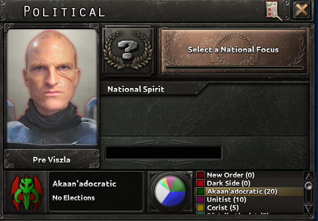
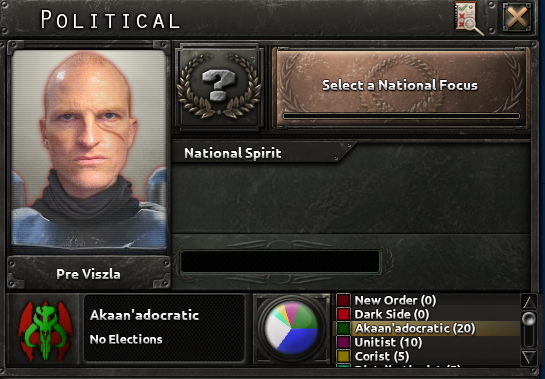

About Me
Hello, my name is Joshua Anderson. Welcome to my web page used to showcase my knowledge, skills and experience. I achieved a first class undegraduate degree in Computer Science with Management at Queen Marys University. I have a deep passion for technology which began when I built my first PC at the age of 14. Since this date I have consistently done thorough research into the technological world as well as constantly expanded on my knowledge by working on a range of different projects and attending different course. I am always looking to learn new skills and expand on current strengths. I have a very positive outlook on life and outside of technology I enjoy Football, the Gym and working on my car.
Skills
Experience
Education
- Web Programming
Designing and Implementing Websites - Team Management
Leadership of Groups Of Employees - Social Media Marketing
Creating Revenue From Social Media
- 2018-2021
Landscape Gardener - 2022-2024
Team Leader @ JD Wetherspoons - 2022-2025
Trainee Recruitment Consultant @ Franklin Fitch
- 2014-2019
GCSE @ Beths Grammar School - 2019-2021
A-Levels @ Beths Grammar School - 2021-2024
First Class Undergraduate ITMB @ Queen Marys University


 
